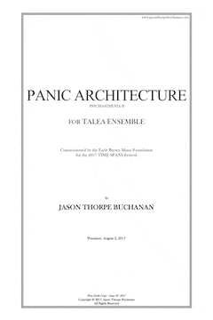

VIEW SCORE:
- 
ABOUT THE WORK:
PANIC ARCHITECTURE (2017)
Instrumentation: 1.1.1.1-1.1.1.0-2 Perc, Pno, Hp. 1.1.1.1.1, bass flute, oboe, bass clarinet, bassoon, horn, trumpet, trombone, 2 percussionists, piano, harp, 2 violins, viola, cello, contrabass, and electronics
Dedication: For the Talea Ensemble
Commission & Awards: Commissioned by the Earle Brown Music Foundation TIME SPANS Festival
World Premiere: TIME SPANS Festival, DiMenna Center, NYC - Talea Ensemble - August 1, 2017
Purchasing information: Digital Score PDF: $19.95, Score and Parts (RENTAL ONLY): $149.95
Contact: jasontbuchanan[at]gmail.com
PROGRAM NOTES:
PANIC
PANIC
ne2k-pco.c:v1.03
hda:
ide0 at 0x1f0-0x1f7,,0x3f6 on irq
hdc:
ide1 at 0x170-0x177,0x376
ACP1: PCI Interrupt:
|
Performances of PANIC ARCHITECTURE

August 02, 2017
Time Spans Festival, DiMenna Center
New York City,
Time Spans Festival, DiMenna Center
New York City,